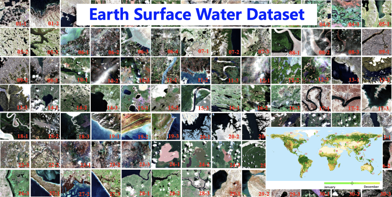
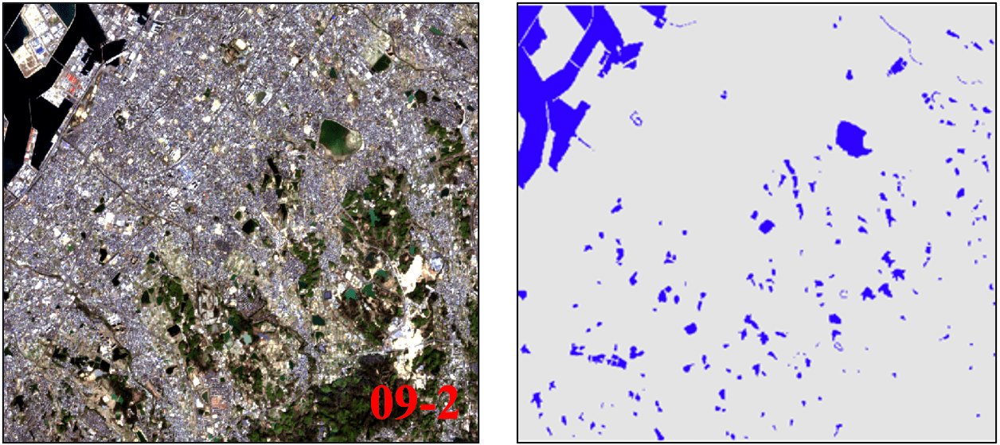
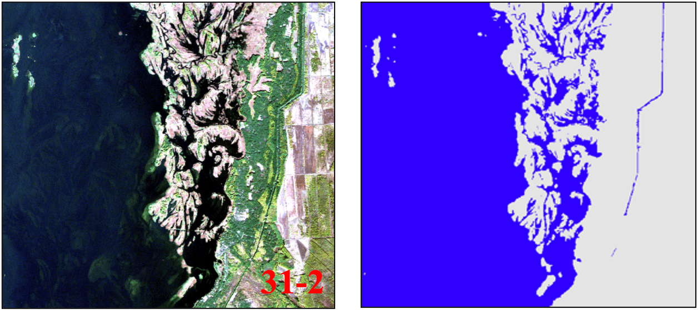

An applicable and automatic method for earth surface water mapping based on multispectral images
This paper is about surface water mapping by using deep learning method.
- Model
We use Deeplabv3+ with MobileNetv2 backbone as the main model structure, additionly, some simple yet effective modifications are designed for improving the satellite image-based surface water mapping.

- Dataset
Surface water dataset for Deep learning could be downloaded from Zenodo.
  